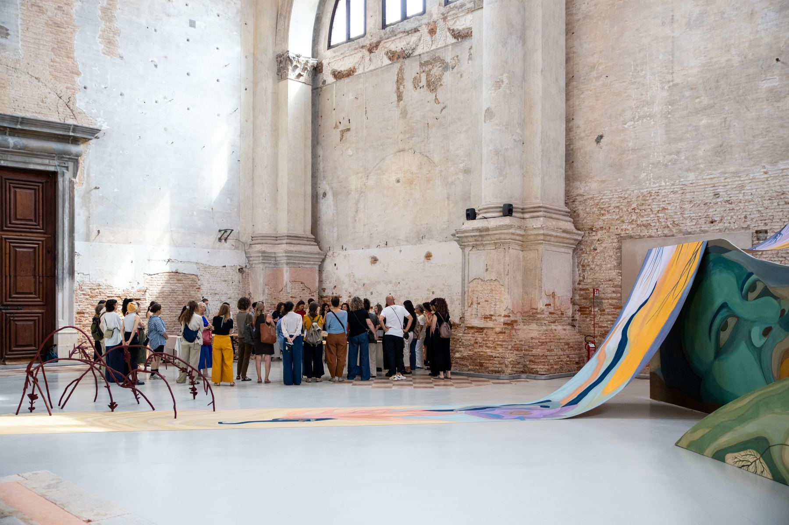

About
Emi BioLab
Carola Emanuela Godja (Emi BioLab) is a designer and researcher based in Venice, Italy, working across biodesign, art and material experimentation.

The practice
One practice, three directions
Education
Sharing knowledge and teaching material experimentation.
Research
Independent, ongoing material research.
Projects
Collaborations, artistic projects and partnerships.

Founder
Carola Emanuela Godja
Designer & Researcher · Founder of Emi BioLab
Carola Emanuela Godja is a designer and researcher, and founder of Emi BioLab, an independent biodesign and research practice based in Venice, Italy.
With a background in Fashion and Visual Arts from Iuav University of Venice, her practice moves between design, art and material research, exploring the creative and expressive potential of matter.
Her encounter with the Venetian Lagoon marked an important turning point in her journey, opening up new ways of thinking about materials, living systems and their environments. This evolving relationship with the lagoon continues to inform her approach to design, grounding her explorations in a specific ecological and cultural context.
Through hands-on experimentation with biological materials and processes, she investigates how matter behaves, transforms and responds to different conditions. Algae-based biomaterials, particularly alginate, represent an ongoing strand of her research, which extends beyond material development towards the exploration of new forms, textures, surfaces and applications.
Moving between artistic intuition and design thinking, her practice brings together material experimentation and aesthetic exploration. She is interested in how the encounter between material qualities, unexpected behaviours and individual sensibility can generate distinctive forms, visual languages and imaginative worlds.
Her approach is grounded in making, observation and continuous dialogue with materials. Rather than pursuing predetermined outcomes, she allows experimentation to inform and reshape the design process, generating knowledge and opening up new creative possibilities.
Alongside her research and design practice, she develops workshops and collaborative experiences, considering knowledge sharing and collective experimentation essential parts of an ongoing exploration.
Through Emi BioLab, she brings together biodesign, artistic research and education, developing a practice rooted in Venice and open to new material, ecological and cultural perspectives.
Education & academic background
Studies
- MAFashion, Iuav University of VeniceWith honours
- BAVisual Arts, Iuav University of Venice
Teaching, lectures & workshops
Selected experience
- 2026 · NovemberInterlacing the Living: A Dialogue between Alginate Biomaterials and Textile StructuresIuav University of Venice (Italy)
Seminar organised by Professor Lucia Rosin and PhD candidate Giulia Ciola within the Fashion Material Design Studio, part of the Fashion Ecologies programme. Co-led with textile and surface designer Leonardo Martines, the seminar explored the dialogue between alginate-based biomaterials and textile structures, bringing together material experimentation, biodesign and textile practices.
- 2026Alginate Yarn and Biotextile Experimentation WorkshopKent State University, Florence Program (Italy)
Led a hands-on workshop introducing students to alginate-based yarn production, biotextile experimentation and material exploration through algae-derived biomaterials.
- 2026New Media and Fashion Communities StudioIuav University of Venice (Italy)
Course led by Caterina Pecchioli, with discussion by Clizia Moradei. Invited Lecture: Biomaterials as Situated Practice. Presentation of an independent research practice focused on algae-based biomaterials developed through a research-through-design approach. The lecture explored alginate as a reactive and situated material system shaped by water, salinity, time and gesture, reflecting on the relationships between material experimentation, lagoon ecologies and collective forms of knowledge production. Drawing from research initiated during a Master's degree in Fashion at Iuav University of Venice, the seminar also examined how workshops and digital communities can function as spaces for material learning and exchange.
- 2026Algae-Based Biomaterials WorkshopUniversity of Illinois Urbana-Champaign × Tessitura La Colombina (Italy)
Designed and facilitated a workshop for international students focused on algae-derived biomaterials, material experimentation and biotextile processes, in collaboration with Prof. Chiara Vincenzi at Tessitura La Colombina.
- 2025EmiBioDesignUniversity of Illinois Urbana-Champaign (USA)
Guest lecture presenting an independent research practice centered on biomaterials, situated design and lagoon ecologies.
- 2025Biomaterials SeminarUniversidad ORT (Uruguay)
Invited seminar introducing biomaterial experimentation, algae-based materials and design research practices.
- 2025Designing with NatureTEDx Venezia, The Human Safety Net (Italy)
Led a public workshop exploring biomaterials and nature-inspired design approaches through hands-on material experimentation.
- 2025Constellation of MatterAWAi Association, Venice (Italy)
Participatory workshop developed within the exhibition Hide and Seek, curated by Deborah Maurelli, exploring collective making and material experimentation.
- 2025TRAMAROcean Space / TBA21 Academy, Venice (Italy)
Development and facilitation of public workshop exploring biomaterials, lagoon ecologies and situated forms of knowledge production.
- 2025Practices of Dowsing: Activating BiomatterFondazione Bevilacqua La Masa, Venice (Italy)
Co-led with artist Camilla Dalmazio, this workshop investigated biomaterials through embodied practices, collective experimentation and material inquiry.
Logos & affiliations
Selected
Press & publications
In print
- 2025AmalgamaTBA21-Academy, Bruno Books
Interviews and articles to add.
Vision & approach
Making as a form of knowledge
At Emi BioLab, design is understood as a way of exploring, understanding and building relationships with matter and the world around us.
Through hands-on experimentation, observation and continuous dialogue with materials, making becomes a form of knowledge. Materials are not approached as passive elements, but as active participants whose properties, behaviours and transformations inform the design process.
Balancing intention with openness to the unexpected, the practice embraces experimentation as both a way of learning and a space for creative exploration. Care, attention and adaptation become essential parts of this process.
Moving between art and design, material research also becomes a means of developing new aesthetics, visual languages and imaginative worlds.
Knowledge is further expanded through education, collaboration and exchange, allowing ideas and processes to evolve across different people, contexts and experiences.